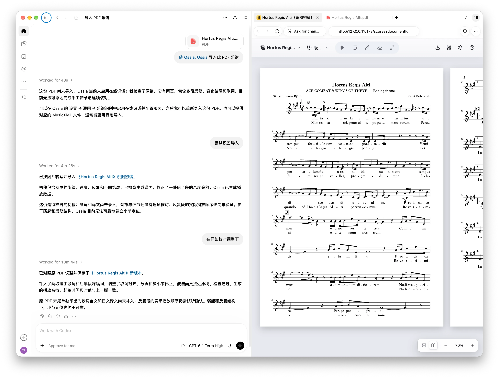
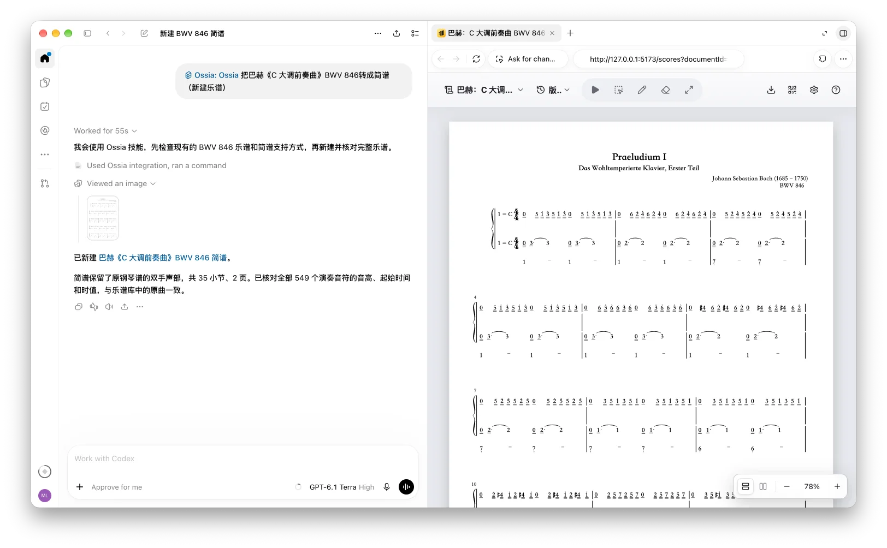
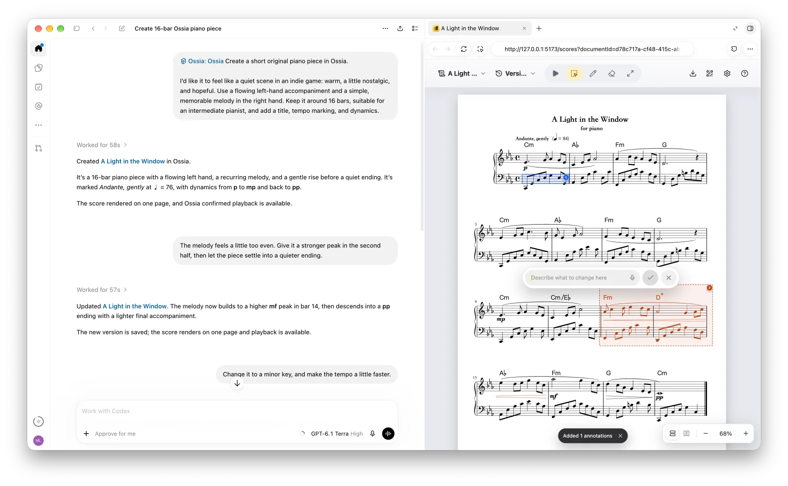
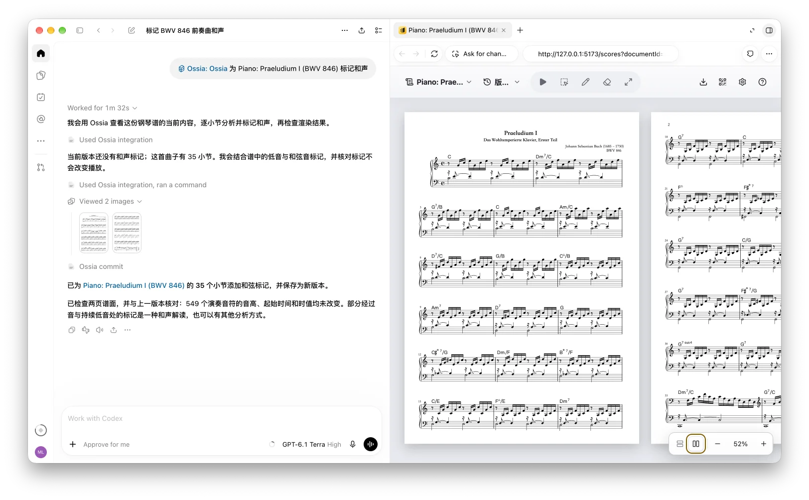
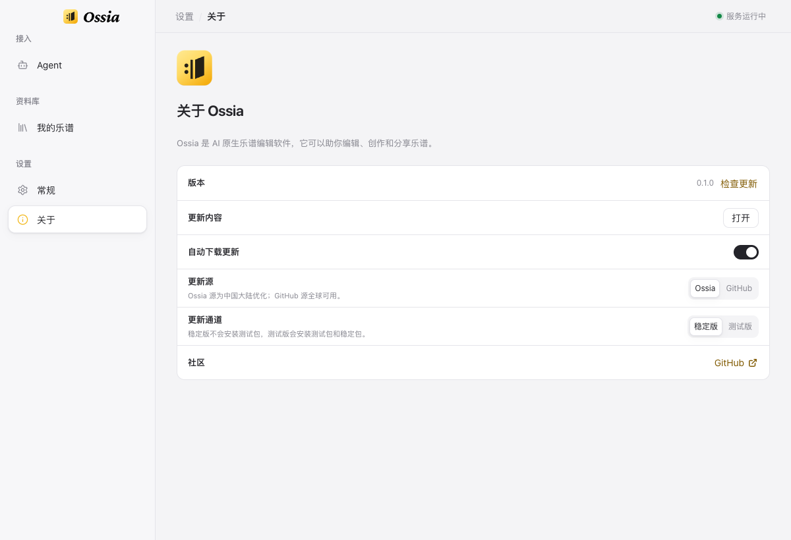
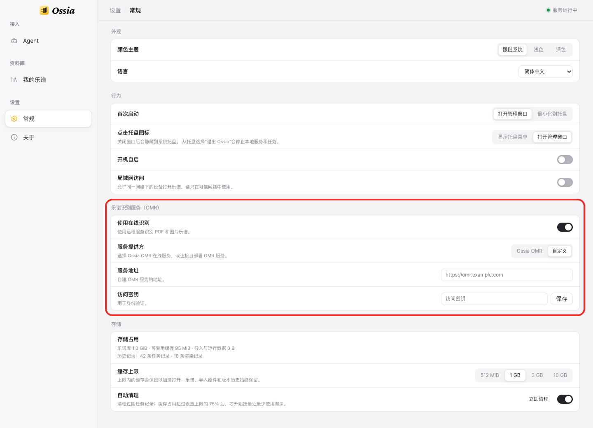

Works with your AI agent
Connect your AI agent in a click. Create, arrange, transpose, and proofread scores in plain language—for piano, guitar, ukulele, violin, and ensembles. Create or arrange scores in numbered notation, too.

Create, arrange, analyze, and refine sheet music alongside your AI agent. Start with a sentence, a score file, or a photo.
Connect your AI agent in a click. Create, arrange, transpose, and proofread scores in plain language—for piano, guitar, ukulele, violin, and ensembles. Create or arrange scores in numbered notation, too.
Listen back, annotate specific passages, and draw freely—even on a touchscreen. Full version history lets you compare revisions and return to any earlier score.
Import MusicXML, MIDI, PDF, or score images, and export publication-ready PDF, PNG, SVG, MusicXML, MIDI, or WAV. Optional OMR support helps recognize scans and PDFs faster.

Your score library, source files, and complete version history live on your own device. Share scores across your local network to read, annotate, and draw in real time on another laptop or tablet.


Create a score for Bach’s Sheep May Safely Graze, BWV 208.

Import this score image, check it carefully against the original, and correct any errors.

Ask an agent to transcribe a PDF score without online OMR, then check and refine the result against the original.

Arrange Sheep May Safely Graze for piano four hands and save it as a new score.

Arrange Hollow Knight as a new guitar tablature score and add chord diagrams.

Convert Bach’s Prelude in C major, BWV 846, to numbered notation as a new score.

Write a beautiful melody, add harmony, and create an accompaniment part.

Create a 16-bar original piano piece, then refine its melody and dynamics through conversation.

What key is Hollow Knight in? Transpose it to A minor.

Analyze and mark the harmony in Bach’s Prelude in C major, BWV 846.
AI can make mistakes. Review the result carefully and refine it through follow-up requests.
Choose the installer for your platform.
Ossia source (optimized for mainland China) If the download fails or is too slow, choose the Ossia source.
Screenshots below may show a Chinese UI and evolve across releases. Click any image to view it full size.
Move Ossia into Applications before opening it. Because the app is not yet signed or notarized, macOS Gatekeeper may block the first launch.


xattr -dr com.apple.quarantine /Applications/Ossia.app/xattr -l /Applications/Ossia.app
If macOS says the developer cannot be verified, you can also select Open Anyway under System Settings → Privacy & Security. Never disable Gatekeeper system-wide—only clear quarantine for apps downloaded from a trusted official source.
Windows SmartScreen may warn about the unsigned installer. Confirm the download came from an official source, then continue as follows.


Connect a supported agent to create, arrange, inspect, and export scores directly through conversation.
Supported agents:


Check for updates and pick an update source under Settings → About (Ossia is optimized for mainland China; GitHub serves globally). After an update downloads, click Update to install it—quitting Ossia beforehand discards an uninstalled download. Beta and stable releases use separate update channels.

OMR is optional. To recognize image and PDF scores more efficiently, open Settings → General → Score recognition service (OMR), enable Use online recognition, select Ossia OMR or a self-hosted OMR service, and provide its access key. For a self-hosted service, also enter its service address. If OMR is disabled, the agent will try to recognize the score from the image itself; a more capable model is recommended to improve recognition accuracy.

Yes. You can configure an optical music recognition (OMR) service under Settings → General → Score recognition service (OMR) to help convert PDFs or images into scores. OMR is optional; a capable agent may also be able to recognize a score without it.
Ossia does not have built-in audio transcription, but your agent may be able to help. Try asking it to import an audio file as a score.
Ossia is optimized for common requests, but an agent may take a longer path or be unable to complete an untested task. Try a more capable model, or open an issue describing your use case so we can improve it.
Verify that the installer came from an official source and Ossia.app is in Applications, then run the quarantine-removal command in the macOS section above.
Click More info in the SmartScreen prompt first to reveal the button. If it still does not appear, check your organization’s device policies or security software.
Install and launch the agent app at least once, then return to Ossia to connect it. Start a fresh conversation afterward so the integration loads.
Check both the update source and channel under Settings → About. The stable channel does not receive beta releases.
Yes—Ossia stays running in the system tray by default so your AI agent can keep working with it. To stop it completely, choose Quit Ossia from the tray menu.